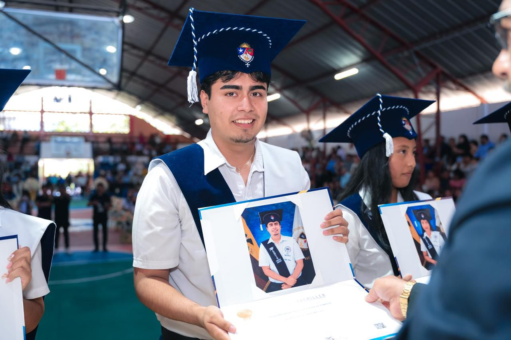

Nombre: Matías Riofrio
Edad: 18 años
Ciudad de residencia: Puyo, Ecuador
Título: Bachiller Técnico en Informática
| Pasatiempo | Descripción | Frecuencia |
|---|---|---|
| Entrenar en el gimnasio | Me gusta mejorar mi físico y salud | 5 veces por semana |
| Programar | Aprender y crear pequeños proyectos | De vez en cuando |
| Escuchar música | Relajarme y motivarme | Diariamente |
| Deporte |
|---|
| Gimnasio |
| Entrenamiento con pesas |
Mi expectativa en la profesión que estoy estudiando es convertirme en un profesional competente, capaz de desarrollar soluciones innovadoras y contribuir positivamente a la sociedad. Aspiro a seguir aprendiendo constantemente y crecer tanto personal como profesionalmente. Escogi esta carrera por que estuve en el bachillerato tecnico en informatica y tengo ya bases en el area de diseño web, redes y programacion & base de datos por lo que se me facilita mucho comprender todo, ya que todo lo que estoy aprendiendo ahora lo vi en los 3 años de bachillerato.